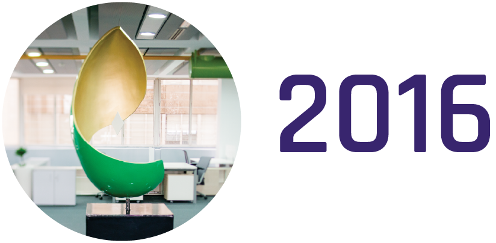
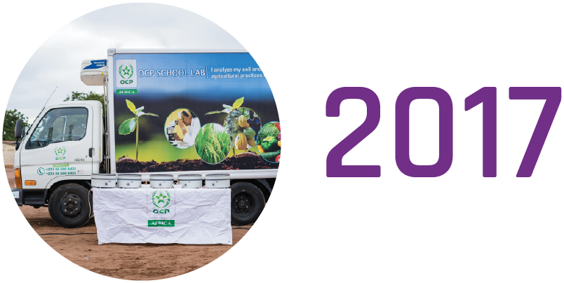
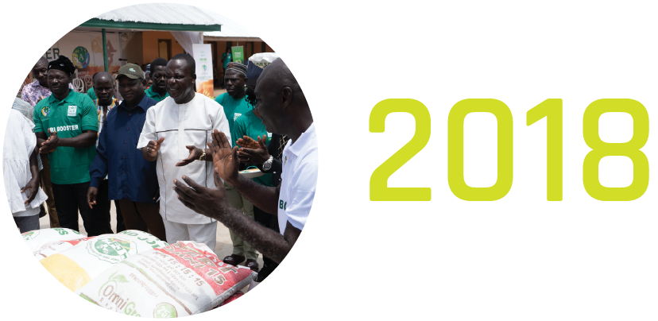
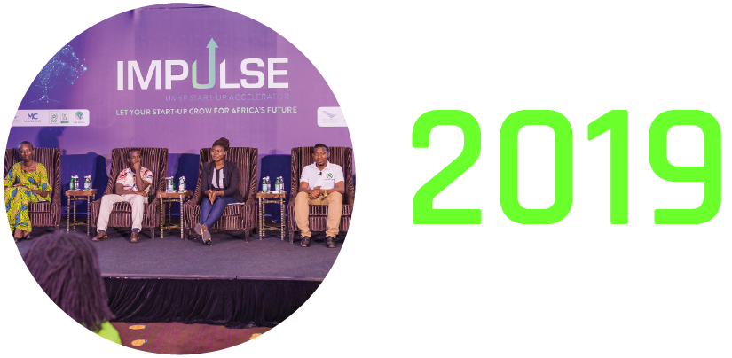
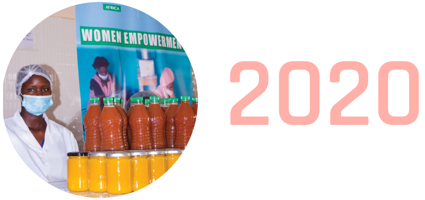
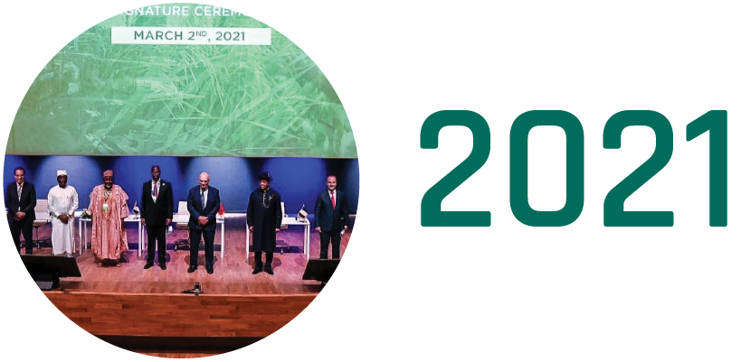

<!DOCTYPE html>
<html lang="en">
    <!DOCTYPE html>
    <html lang="en">
    
<head>
    <meta charset="UTF-8" />
    <meta http-equiv="X-UA-Compatible" content="IE=edge" />
    <meta name="viewport" content="width=device-width, initial-scale=1.0" />
    <title>DIGITAL REPORT | OCP AFRICA 2021</title>

    <script src="js/jquery.min.js"></script>
    <script src="js/TweenMax.min.js"></script>
    <script src="js/hammer.min.js"></script>
    <script src="js/fullPagepmd.min.js"></script>
    <script src="js/bootstrap.min.js"></script>
    <script src="js/particles.js"></script>
    <script src="js/slick.min.js"></script>
    <script src="js/jquery.mousewheel.min.js"></script>
    <script src="js/scrollbooster.min.js"></script>


    <link rel="stylesheet" href="css/bootstrap.min.css" />
    <link rel="stylesheet" href="css/main.css" />
    <link rel="stylesheet" href="css/main-large.css" />
    
    <link rel="stylesheet" href="css/main-xlarge.css" />
    
    <link rel="stylesheet" href="css/main-xxlarge.css" />

    <link rel="stylesheet" href="css/slick.css">
    <link rel="stylesheet" href="css/slick-theme.css">
</head>

<body>
    <div id="ch-more-1" class="chapter-more-content area-1" style=" display: block;bottom: 0%; left: 0% !important; ">
       <!--  -->
        <div>
            <div class="" style="position: relative; ">
              

                <div class="viewport container-fluid chapter-1-c-1" style="min-height: 100vh; width: 100%;background-size: cover; background-color: #FCF4EB; background-image: url('assets/images/timeline/timelinebg.png');" >
                            <h2 class="title" style="margin:40px; color: #2F6F76 ; position: absolute;">RETROSPECTIVE</h2>
                        <div class="scrollable-content">
                            
                            <div class="aligned-top-element" style="margin-left: 300px;">
                                <h3 class="timeline-title" style="color: #38256E;">Février</h3>
                                <p class="timeline-text">
                                    • Inauguration de l’African Fertilizer Complex (AFC) par le Groupe OCP
                                    <br>
                                    • Annonce de la création d’OCP Africa lors de l’Argus FMB à Marrakech
                                    

                                </p>
                                <h3 class="timeline-title" style="color: #38256E;">Mai</h3>
                                <p class="timeline-text">
                                    • Création de l'OCP Kenya
                                    <br>
                                    • Creation de OCP Sénégal
                                    

                                </p>
                            </div>
                            <div class="aligned-top-element" style="margin-left: 900px;">
                                <h3 class="timeline-title" style="color: #38256E;">Novembre</h3>
                                <p class="timeline-text">
                                    • Creation de OCP Bénin
                                    <br>
                                    • Signature du Framework Cooperative  
  Agreement en Ethiopie
                                </p>
                                <h3 class="timeline-title" style="color: #38256E;">Décembre</h3>
                                <p class="timeline-text">
                                    • Protocole d'accord pour la production 
                                    d’engrais au Nigéria (PFI)
                                    <br>
                                    • Protocole d'accord avec
  la FEPSAN au Nigéria (PFI)

                                    

                                </p>


                            </div>
                            <div class="aligned-bottom-element" style="margin-left: 600px;">
                                <h3 class="timeline-title" style="color: #38256E;">Juillet</h3>
                                <p class="timeline-text">
                                    Création de l'OCP Africa Fertilizers Nigeria
                    
                                </p>
                                <h3 class="timeline-title" style="color: #38256E;">Août</h3>
                                <p class="timeline-text">
                                    • Creation de OCP Côte d'Ivoire <br>
• Creation de OCP Ghana <br>
• Creation de OCP Cameroun <br>
• Creation de OCP Zambia

                                </p>
                                
                                <h3 class="timeline-title" style="color: #38256E;">Septembre</h3>
                                <p class="timeline-text">
                                    Creation de OCP Tanzania

                                </p>
                            </div>
                            <div class="dashed-line" style="width: 1100px ;" ></div>


                            


                            <div class="aligned-top-element"  style="margin-left: 1700px;">
                                <h3 class="timeline-title" style="color: #712F87;">Février</h3>
                                <p class="timeline-text">
                                    • Lancement de l’OCP School Lab (OSL) en Côte d'Ivoire
                                    <br>
                                    • Signature d’une convention entre OCP et le ministère de l’agriculture de la Guinée
                                    

                                </p>
                            </div>
                            <div class="aligned-top-element" style="margin-left: 2200px;">
                                <h3 class="timeline-title" style="color: #712F87;">Juillet</h3>
                                <p class="timeline-text">
                                    Lancement d’OSL au Ghana
                                </p>
                                <h3 class="timeline-title" style="color: #712F87;">Août</h3>
                                <p class="timeline-text">
                                    Lancement d’Agribooster au Kenya

                                </p>


                            </div>
                            <div class="aligned-bottom-element" style="margin-left: 1900px;">
                                <h3 class="timeline-title" style="color: #712F87;">Mai</h3>
                                <p class="timeline-text">
                                    Début de la collaboration avec l’État du Kaduna au Nigéria
                    
                                </p>
                                <h3 class="timeline-title" style="color: #712F87;">Juin</h3>
                                <p class="timeline-text">
                                    • Lancement d'Agribooster au Nigeria <br>
• Lancement d’OSL au Kenya

                                </p>
                                
                            </div>
                            <div class="dashed-line" style="width: 800px ;" ></div>


                            


  <div class="aligned-top-element"  style="margin-left: 2700px;">
                                <h3 class="timeline-title" style="color: #D1DD26;">Janvier</h3>
                                <p class="timeline-text">
                                    Lancement Agribooster sur la filière sorgho au Kenya
                                 
                                </p>
                                <h3 class="timeline-title" style="color: #D1DD26;">Mai</h3>
                                <p class="timeline-text">
                                    • Lancement OSL au 
  Sénégal
                                 
                                </p>
                            </div>


                            <div class="aligned-top-element" style="margin-left: 3200px;">
                                <h3 class="timeline-title" style="color: #D1DD26;">Décembre</h3>
                                <p class="timeline-text">
                                    Lancement du projet AKADI en Côte d’Ivoire

                                </p>


                            </div>
                            <div class="aligned-bottom-element" style="margin-left: 2900px;">
                                <h3 class="timeline-title" style="color: #D1DD26;">Août</h3>
                                <p class="timeline-text">• Création de la Rwanda 
                                    Fertilizer Company (RFC) <br>
                                  • Creation d’OCP Ethiopia 
                                    Fertilizer Manufacturing 
                                    Company
                                </p>
                                
                            </div>
                            <div class="dashed-line" style="width: 800px ;" ></div>


                            


                            <div class="aligned-top-element"  style="margin-left: 3700px;">
                                <h3 class="timeline-title" style="color: #6BFF2C;">Juillet</h3>
                                <p class="timeline-text">
                                    Tournée africaine de IMPULSE,programme d’accélérationde startups digitales 
                                </p>
                            </div>


                            <div class="aligned-top-element" style="margin-left: 4200px;">
                                <h3 class="timeline-title" style="color: #6BFF2C;">Octobre</h3>
                                <p class="timeline-text">
                                    Lancement de Farmer House
& Agripromoter au Nigeria

                                </p>
                                <h3 class="timeline-title" style="color: #6BFF2C;">Novembre</h3>
                                <p class="timeline-text">
                                    Lancement de la collaboration avec la société Internationale Islamique de Financement du Commerce (ITFC) dans le cadre d’OCP School Lab au Sénégal
                                </p>


                            </div>
                            <div class="aligned-bottom-element" style="margin-left: 3900px;">
                                <h3 class="timeline-title" style="color: #6BFF2C;">Septembre</h3>
                                <p class="timeline-text">
                                    • Signature du partenariat 
  avec le Ministry Of Food & 
  Agriculture (MOFA) au Ghana <br>
• Déploiement du pilote de la  
  plateforme Udongo et son 
  application mobile au 
  Nigeria <br>
•Lancement de Agribooster 
  sur la filière riz en Côte 
  d’Ivoire 
                                </p>
                                
                            </div>
                            <div class="dashed-line" style="width: 800px ;" ></div>


                            


                            


                            <div class="aligned-top-element"  style="margin-left: 4800px;">
                                <h3 class="timeline-title" style="color: #FFB0A9;">Janvier</h3>
                                <p class="timeline-text">
                                    Lancement du projet d’autonomisation des femmes et des jeunes au Sénégal
                                </p>


                                <h3 class="timeline-title" style="color: #FFB0A9;">Juillet</h3>
                                <p class="timeline-text">
                                    Signature convention avec la Délégation à l’Entreprenariat Rapide des femmes et des jeunes (DER) pour accompagner le développement de la filière arachide au Sénégal
                                </p>


                            </div>


                            <div class="aligned-top-element" style="margin-left: 5300px;">
                                <h3 class="timeline-title" style="color: #FFB0A9;">Octobre</h3>
                                <p class="timeline-text">
                                    • Lancement du programme Empowering African Youth (EMAY) au Nigeria <br>
• Signature du protocole d'accord avec la Banque Africaine de Développement (BAD)
                                </p>
                                <h3 class="timeline-title" style="color: #FFB0A9;">Novembre</h3>
                                <p class="timeline-text">
                                    Inauguration de l'usine de mélange de l’État du Sokoto au Nigéria
                                </p>


                            </div>
                            <div class="aligned-bottom-element" style="margin-left: 5100px;">
                                <h3 class="timeline-title" style="color: #FFB0A9;">Septembre</h3>
                                <p class="timeline-text">
                                    • Signature du protocole   
  d’accord avec la Société 
  Financière Internationale <br>
•Signature de la convention 
  avec le Ministère de la 
  Promotion de Riz de la Côte 
  d’Ivoire
                                </p>
                                
                            </div>
                            <div class="dashed-line" style="width: 800px ;" ></div>


                            


                            

                            <div class="aligned-top-element" style="margin-left: 6000px;">
                                <h3 class="timeline-title" style="color: #006C5B;">Mars</h3>
                                <p class="timeline-text">
                                    Signature de 5 protocoles d’accord pour la mise en place du complexe industriel 
au Nigeria
                                </p>


                            </div>
                            <div class="aligned-bottom-element" style="margin-left: 6200px;">
                                <h3 class="timeline-title" style="color: #006C5B;">Avril</h3>
                                <p class="timeline-text">
                                    Protocole d'accord avec la société Internationale Islamiquede Financement du Commerce (ITFC) pour la campagne Agribooster en Côte d'Ivoire           </p>
                                
                            </div>
                            <div class="dashed-line" style="width: 800px ;" ></div>
                            
                        </div>                   
                </div>
                
             
            </div>
           
            <div class="mini-footer">
                <div class="container-fluid" >
                    <div class="row">
                        <div class="col-lg-6">
    
                            <a href="" style="margin-right: 40px;">Home </a>
                            <a href="" >Download </a>
                        </div>
                        <div class="col-lg-6">
        
                            <a href="" class="follow">Follow us on social media </a>
                            <a href="">  </a>
                            <a href="">  </a>
                            <a href="">  </a>
                            <a href="">  </a>
                            
                        </div>
                    </div>
                    
                </div>
    
            </div>
            
        </div>


    </div>
    
</body>
<script>
        
        const sb = new ScrollBooster({
            viewport: document.querySelector('.viewport'),
            content:  document.querySelector('.scrollable-content'),    
            direction: "horizontal",
            scrollMode: "transform"
        });
        jQuery.fn.onPositionChanged = function (trigger, millis) {
    if (millis == null) millis = 100;
    var o = $(this[0]); // our jquery object
    if (o.length < 1) return o;

    var lastPos = null;
    var lastOff = null;
    setInterval(function () {
        if (o == null || o.length < 1) return o; // abort if element is non existend eny more
        if (lastPos == null) lastPos = o.position();
        if (lastOff == null) lastOff = o.offset();
        var newPos = o.position();
        var newOff = o.offset();
        if (lastPos.top != newPos.top || lastPos.left != newPos.left) {
            $(this).trigger('onPositionChanged', { lastPos: lastPos, newPos: newPos });
            if (typeof (trigger) == "function") trigger(lastPos, newPos);
            lastPos = o.position();
        }
        if (lastOff.top != newOff.top || lastOff.left != newOff.left) {
            $(this).trigger('onOffsetChanged', { lastOff: lastOff, newOff: newOff});
            if (typeof (trigger) == "function") trigger(lastOff, newOff);
            lastOff= o.offset();
        }
    }, millis);

    return o;
};

        // if($(".year").)
        $(".scrollable-content").onPositionChanged( function() {
            // On each scroll check if `li` is in interested viewport
            
            var windowWidth = $(window).width();

                $('.year').each(function() {
                var elementLeft = $(this).offset().left,
                    visibleOffset = (windowWidth / 2) + 200 ,
                    hideOffset = visibleOffset - 1000;

                // If element is in center of viewport, make visible
                if (elementLeft <= visibleOffset && elementLeft >= hideOffset) {
                    $(this).addClass('element-visible');
                } else {
                    $(this).removeClass('element-visible');
                }
                });

                $('.aligned-bottom-element , .aligned-top-element').each(function() {
                var elementLeft = $(this).offset().left,
                    visibleOffset = 3000 ,
                    hideOffset = 1000;

                // If element is in center of viewport, make visible
                if (elementLeft <= visibleOffset && elementLeft >= hideOffset) {
                    $(this).addClass('element-fade');
                } else {
                    $(this).removeClass('element-fade');
                }
                });
            
        });

</script>
</html>